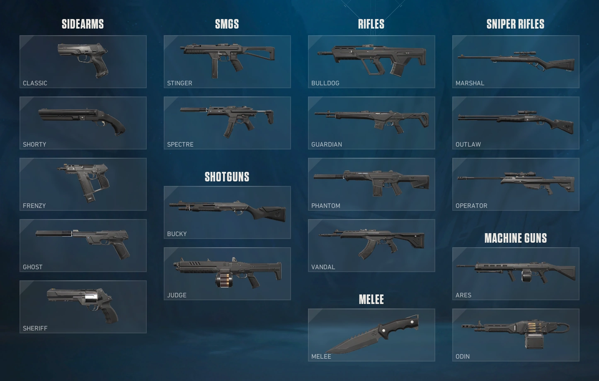

Submetralhadoras (SMGs)
| Arma | Preço |
|---|---|
| Stinger | 1.100 |
| Spectre | 1.600 |
O portal sobre Valorant Champions Shanghai 2026
No início de cada round os jogadores compram armas com créditos, a moeda do jogo. Gerenciar a economia do time é tão importante quanto mirar bem. Os preços podem mudar conforme as atualizações (patches) do jogo.

| Arma | Preço (créditos) | Característica |
|---|---|---|
| Classic | Grátis | Pistola padrão com modo de rajada. |
| Shorty | 150 | Mini-escopeta para curta distância. |
| Frenzy | 450 | Pistola automática. |
| Ghost | 500 | Silenciada e precisa. |
| Bandit | 600 | Pistola semiautomática de alto dano. |
| Sheriff | 800 | Revólver capaz de matar com um tiro na cabeça. |
| Arma | Preço |
|---|---|
| Stinger | 1.100 |
| Spectre | 1.600 |
| Arma | Preço |
|---|---|
| Bucky | 850 |
| Judge | 1.850 |
| Arma | Preço | Uso no Champions |
|---|---|---|
| Bulldog | 2.050 | |
| Guardian | 2.250 | |
| Phantom | 2.900 | |
| Vandal | 2.900 |
O indicador de uso é uma estimativa ilustrativa do projeto, não uma estatística oficial.
| Arma | Preço |
|---|---|
| Marshal | 950 |
| Outlaw | 2.400 |
| Operator | 4.700 |
| Arma | Preço |
|---|---|
| Ares | 1.600 |
| Odin | 3.200 |
A Faca (Tactical Knife) é gratuita e sempre disponível.